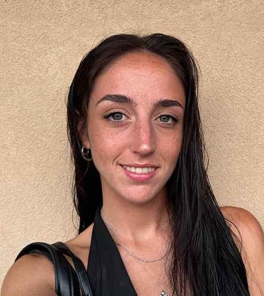

Portfolio Ocampo Azul
I am a second-year Design student at the School of Polytechnic Design, with three years of prior studies in Architecture. I graduated in 2020 with a Bachelor’s degree in Communication, bringing together a versatile profile that combines creativity, communication skills, and a strong technical foundation.
I consider myself organized and determined, with ambitious goals and a constant drive for personal growth and learning. I enjoy spending time with others and value opportunities to discover new places and experiences. I am flexible and adaptable with tasks and responsibilities, which allows me to approach challenges effectively and enthusiastically.
My Skills
- Creativity: I have a strong creative mindset that allows me to generate innovative ideas and solutions in design projects.
- Communication: My background in Communication has equipped me with complete communication skills, enabling me to effectively convey ideas and collaborate with others.
- Technical Proficiency: With three years of studies in Architecture, I have developed a solid technical foundation in design principles, software tools, and project management.
- Organization: I am highly organized, which helps me manage my time and resources efficiently to meet deadlines and achieve project goals.
- Determination: I am determined to succeed and continuously improve, which drives me to overcome challenges and achieve my ambitions.
- Adaptability: I am flexible and adaptable, allowing me to navigate changing circumstances and take on new responsibilities with ease.
My Projects
- Tacolandia: Entire rebranding project for a mexican restaurant, including logo design, menu layout, and social media graphics.
- Sudestada Digital: Entire branding project for a communication agency, including logo design, menu layout, and social media graphics.
Contact Information
Location: Milan, Italy
Instagram
azulocampo1405@gmail.com
+39 333 1430 141